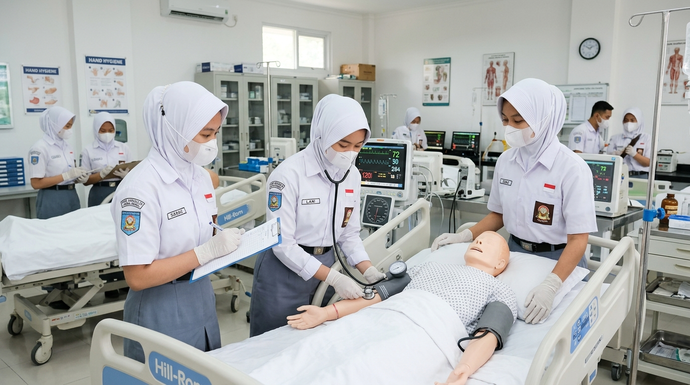

Mendidik tenaga asisten keperawatan yang penuh empati, berintegritas tinggi, terampil melakukan tindakan dasar keperawatan, dan siap mengabdi bagi kemanusiaan.

Program Keahlian Asisten Keperawatan (Askep) di SMKS PGRI Rangkasbitung membekali peserta didik dengan pemahaman medis dasar, keterampilan klinis keperawatan, etika profesi luhur, dan ketangkasan tindakan tanggap darurat.
Didukung laboratorium keperawatan lengkap dengan ranjang pasien standar rumah sakit, manikin anatomi interaktif, alat tensimeter digital & manual, oksimeter, instrumen sterilisasi, serta program Praktik Kerja Lapangan (PKL) di rumah sakit dan puskesmas rujukan di Banten.
BNSP Asisten Perawat
3 Tahun Terakreditasi
Lab Medis Simulasi RS
RSUD & Puskesmas Lebak
Kompetensi esensial yang dipelajari siswa untuk memberikan pelayanan medis dasar secara aman dan profesional.
Keterampilan pengukuran tekanan darah (tensi), denyut nadi, laju pernapasan, suhu tubuh, saturasi oksigen (SpO2), dan pencatatan rekam medis.
Membantu personal hygiene (memandikan pasien di ranjang, oral hygiene), mobilisasi alih baring, nutrisi enteral, serta pencegahan dekubitus.
Teknik cuci tangan 6 langkah WHO, penggunaan Alat Pelindung Diri (APD medis), sterilisasi alat instrumen, dan penanganan limbah medis jarum suntik.
Penanganan cedera darurat, balut bidai patah tulang, Bantuan Hidup Dasar (BHD / CPR), penanganan pingsan, dan evakuasi korban kecelakaan.
Kebutuhan tenaga kesehatan terus meningkat pesat seiring pertambahan fasilitas kesehatan nasional dan global.
Bekerja berdampingan dengan dokter dan perawat spesialis dalam merawat pasien rawat inap, IGD, dan poliklinik rumah sakit.
Melayani registrasi pasien, pemeriksaan tensi awal, membantu tindakan bedah minor dokter, dan sterilisasi alat medis.
Memberikan pendampingan perawatan kesehatan personal bagi lansia atau pasien pasca-operasi dengan tarif profesional.
Peluang penempatan kerja sebagai tenaga caregiver di Jepang, Jerman, dan Timur Tengah dengan standar remunerasi internasional.
Melanjutkan pendidikan ke program D3/S1 Keperawatan, Kebidanan, Ilmu Gizi, Analis Kesehatan, atau Administrasi Rumah Sakit.
Berperan aktif dalam posko kesehatan desa, panti rehabilitasi, serta organisasi bantuan kemanusiaan tanggap bencana.
Temukan keahlian kejuruan lainnya yang sesuai dengan minat dan passion Anda.

Keahlian infrastruktur jaringan komputer, instalasi server Linux & Windows, fiber optic, dan cyber security.
Lihat Jurusan
Keahlian tata kelola perkantoran modern, korespondensi, kearsipan digital, dan layanan bisnis prima.
Lihat Jurusan
Keterampilan meracik obat, identifikasi simplisia herbal, dan tata kelola apotek serta industri obat.
Lihat Jurusan
Pembukuan akuntansi digital, perpajakan, audit laporan keuangan, dan perbankan modern.
Lihat Jurusan